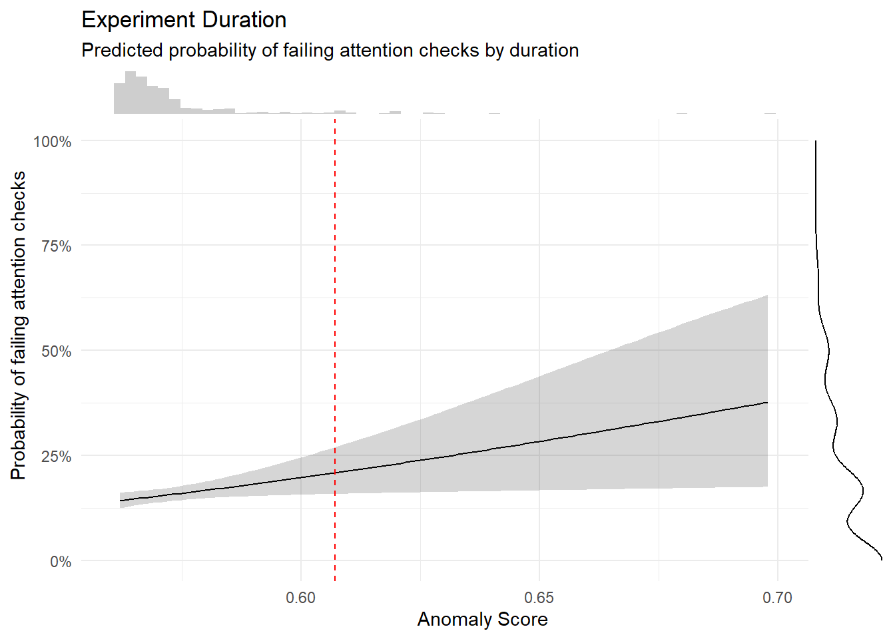

library(tidyverse)
library(easystats)
library(patchwork)
library(ggside)
library(ggdist)
df <- read.csv("../data/rawdata_participants.csv")
dftask <- read.csv("../data/rawdata_task.csv")FictionArt - Data Cleaning
Data Preparation
Recruitment History
Code
# Consecutive count of participants per day (as area)
df |>
mutate(Date = as.Date(Experiment_StartDate, format = "%Y-%m-%d %H:%M:%S")) |>
summarize(N = n(), .by=c("Date", "Recruitment")) |>
complete(Date, Recruitment, fill = list(N = 0)) |>
mutate(N = cumsum(N), .by="Recruitment") |>
ggplot(aes(x = Date, y = N)) +
geom_area(aes(fill=Recruitment)) +
scale_y_continuous(expand = c(0, 0)) +
labs(
title = "Recruitment History",
x = "Date",
y = "Total Number of Participants"
) +
see::theme_modern()Code
# Table
summarize(df, N = n(), .by=c("Recruitment")) |>
arrange(desc(N)) |>
gt::gt() |>
gt::grand_summary_rows(columns = "N", fns = Total ~ sum(.)) |>
gt::opt_stylize(style = 2, color = "gray") |>
gt::tab_header("Number of participants per recruitment source") | Number of participants per recruitment source | ||
|---|---|---|
| Recruitment | N | |
| prolific | 310 | |
| os | 16 | |
| fw | 13 | |
| dm | 1 | |
| Total | — | 340 |
Experiment Feedback
Experiment Enjoyment
Code
df |>
summarise(n = n(), .by=c("Experiment_Enjoyment")) |>
filter(!is.na(Experiment_Enjoyment)) |>
mutate(n = n / sum(n),
Experiment_Enjoyment = fct_rev(as.factor(Experiment_Enjoyment))) |>
ggplot(aes(y = n, x = 1, fill = Experiment_Enjoyment)) +
geom_bar(stat="identity", position="stack") +
scale_fill_manual(values=c("green", "yellowgreen", "yellow", "orange", "red")) +
coord_flip() +
scale_x_continuous(expand=c(0, 0)) +
scale_y_continuous(labels = scales::percent) +
labs(title="Experiment Enjoyment",
subtitle="Proportion of participants by condition") +
guides(fill = guide_legend(reverse=TRUE)) +
theme_minimal() +
theme(
axis.title = element_blank(),
axis.text.y = element_blank(),
panel.grid.major.y = element_blank(),
panel.grid.minor.y = element_blank(),
legend.position = "top",
legend.title = element_blank()) Task Feedback
Proportion
Code
dat <- df |>
select(starts_with("Feedback"), -contains("Confidence")) |>
pivot_longer(everything(), names_to = "Question", values_to = "Answer") |>
group_by(Question, Answer) |>
summarise(prop = n()/nrow(df), .groups = 'drop') |>
complete(Question, Answer, fill = list(prop = 0)) |>
filter(Answer == TRUE) |>
mutate(Question = str_remove(Question, "Feedback_"),
Question = str_replace(Question, "LabelsNotMatched", "Labels did not always match the images"),
Question = str_replace(Question, "LabelsReversed", "Labels were Reversed"),
# Question = str_replace(Question, "DiffNone", "No Difference Real/AI"),
# Question = str_replace(Question, "DiffObvious", "Obvious Difference Real/AI"),
# Question = str_replace(Question, "DiffSubtle", "Subtle Difference Real/AI"),
# Question = str_replace(Question, "AILessAttractive", "AI = less attractive"),
# Question = str_replace(Question, "AIMoreAttractive", "AI = more attractive"),
# Question = str_replace(Question, "SomeFacesAttractive", "Some Faces Attractive"),
Question = str_replace(Question, "GoodForgeries", "Forgeries very convincing and hard to distinguish"),
Question = str_replace(Question, "BadForgeries", "Forgeries were less well executed")) |>
mutate(Question = fct_reorder(Question, desc(prop)))
dat |>
ggplot(aes(x = Question, y = prop)) +
geom_bar(stat = "identity") +
scale_y_continuous(expand = c(0, 0), breaks= scales::pretty_breaks(), labels=scales::percent) +
labs(x="Feedback", y = "Participants", title = "Feedback") +
theme_minimal() +
theme(
plot.title = element_text(size = rel(1.2), face = "bold", hjust = 0),
plot.subtitle = element_text(size = rel(1.2), vjust = 7),
axis.text.y = element_text(size = rel(1.1)),
axis.text.x = element_text(size = rel(1.1), angle = 45, hjust = 1),
axis.title.x = element_blank()
)Code
dat |>
select(Question, prop) |>
arrange(desc(prop)) |>
mutate(prop = format_percent(prop)) |>
gt::gt() |>
gt::opt_stylize() |>
gt::tab_header("Proportion of participants who answered 'yes' to each question") |>
gt::cols_label(prop = "Proportion of participants who answered 'Yes'")| Proportion of participants who answered 'yes' to each question | |
|---|---|
| Question | Proportion of participants who answered 'Yes' |
| Forgeries very convincing and hard to distinguish | 84.12% |
| LabelsPaidAttention | 64.41% |
| SmallDifferenceRealAI | 52.06% |
| Labels did not always match the images | 50.88% |
| NoDifferenceRealAI | 33.53% |
| LessBeautifulAI | 26.47% |
| LabelsAllReal | 15.88% |
| Forgeries were less well executed | 14.12% |
| BigDifferenceRealAI | 12.65% |
| MoreBeautifulAI | 11.47% |
| Labels were Reversed | 8.24% |
| LabelsAllAI | 7.94% |
| LabelsNoAttention | 5.00% |
Co-occurence
Code
cor <- df |>
select(starts_with("Feedback"), -contains("Confidence")) |>
mutate_all(~ifelse(.==TRUE, 1, 0)) |>
correlation(method="tetrachoric", redundant = TRUE) |>
correlation::cor_sort() |>
correlation::cor_lower()
cor |>
mutate(val = paste0(insight::format_value(rho), format_p(p, stars_only=TRUE))) |>
mutate(Parameter2 = fct_rev(Parameter2)) |>
mutate(Parameter1 = fct_relabel(Parameter1, \(x) str_remove_all(x, "Feedback_")),
Parameter2 = fct_relabel(Parameter2, \(x) str_remove_all(x, "Feedback_"))) |>
ggplot(aes(x=Parameter1, y=Parameter2)) +
geom_tile(aes(fill = rho), color = "white") +
geom_text(aes(label = val), size = 3) +
labs(title = "Feedback Co-occurence Matrix") +
scale_fill_gradient2(
low = "#2196F3",
mid = "white",
high = "#F44336",
breaks = c(-1, 0, 1),
guide = guide_colourbar(ticks=FALSE),
midpoint = 0,
na.value = "grey85",
limit = c(-1, 1)) +
theme_minimal() +
theme(legend.title = element_blank(),
axis.title.x = element_blank(),
axis.title.y = element_blank(),
axis.text.x = element_text(angle = 45, hjust = 1)):::
Dimension Computation
Code
# Should we re-map the Worth values? -----------------------------------
# Re-map to values in dollars
# alldata_task$Worth2 <- ifelse(alldata_task$Worth == 1, 10, alldata_task$Worth)
# alldata_task$Worth2 <- ifelse(alldata_task$Worth2 == 2, 100, alldata_task$Worth2)
# alldata_task$Worth2 <- ifelse(alldata_task$Worth2 == 3, 1000, alldata_task$Worth2)
# alldata_task$Worth2 <- ifelse(alldata_task$Worth2 == 4, 10000, alldata_task$Worth2)
# alldata_task$Worth2 <- ifelse(alldata_task$Worth2 == 5, 100000, alldata_task$Worth2)
#
# library(tidyverse)
#
# t <- as.data.frame(table(alldata_task$Worth))
# cor.test(as.numeric(as.character(t$Var1)), t$Freq)
# t <- as.data.frame(table(log1p(alldata_task$Worth2)))
# cor.test(as.numeric(as.character(t$Var1)), t$Freq)
#
# ggplot(alldata_task, aes(x=Worth)) +
# geom_bar() +
# geom_abline()
# ggplot(alldata_task, aes(x=log1p(Worth2))) +
# geom_bar()
# ggplot(alldata_task, aes(x=Worth2)) +
# geom_bar() +
# scale_x_continuous(transform = "log1p", breaks = c(0, 10, 100, 1000, 10000, 100000))
# ggplot(alldata_task, aes(x=Worth, y=Beauty)) +
# geom_smooth(method = "lm") +
# geom_jitter(height=0)
# ggplot(alldata_task, aes(x=Worth2, y=Beauty)) +
# geom_smooth(method = "lm") +
# geom_jitter(height=0) +
# scale_x_continuous(transform = "log1p", breaks = c(0, 10, 100, 1000, 10000, 100000))
# summary(lm(Beauty ~ Worth, data = alldata_task))
# summary(lm(Beauty ~ log1p(Worth2), data = alldata_task))MINT
Code
compute_and_remove <- function(df, name="BodyAwareness", pattern=name, method="mean") {
items <- select(df, starts_with(pattern), -contains("AttentionCheck"))
df <- df[!names(df) %in% names(items)]
if(method == "mean") {
df[[name]] <- rowMeans(items, na.rm=TRUE)
} else {
df[[name]] <- rowSums(items, na.rm=TRUE)
}
df
}# > names(df)
# [1] "Participant" "Recruitment" "Experiment_StartDate" "Experiment_Duration"
# [5] "Browser_Version" "Mobile" "Platform" "Screen_Width"
# [9] "Screen_Height" "Gender" "Age" "Education"
# [13] "Student" "Country" "Ethnicity" "Art_Expertise"
# [17] "Experiment_Enjoyment" "Experiment_Quality" "Experiment_Feedback" "MINT_Derm_16"
# [21] "MINT_Resp_26" "MINT_ExAc_1" "MINT_Gast_33" "MINT_Olfa_23"
# [25] "MINT_Derm_18" "MINT_Sati_20" "MINT_Resp_25" "MINT_ReIA_6"
# [29] "MINT_ReIA_4" "MINT_ExAc_2" "MINT_SexS_9" "MINT_SexS_7"
# [33] "MINT_Gast_32" "MINT_Derm_17" "MINT_Urin_15" "MINT_CaCo_11"
# [37] "MINT_Urin_13" "MINT_Sati_21" "MINT_Card_29" "MINT_CaCo_10"
# [41] "MINT_Resp_27" "MINT_Sati_19" "MINT_CaCo_12" "MINT_AttentionCheck"
# [45] "MINT_Olfa_24" "MINT_Gast_31" "MINT_Urin_14" "MINT_ReIA_5"
# [49] "MINT_Card_28" "MINT_Card_30" "MINT_SexS_8" "MINT_ExAc_3"
# [53] "MINT_Olfa_22" "Duration_MINT" "BAIT_AI_Knowledge" "BAIT_AI_Use"
# [57] "BAIT_5_ImitatingReality" "BAIT_12_Benefit" "BAIT_4_VideosRealistic" "BAIT_8_TextIssues"
# [61] "BAIT_1_ImagesRealistic" "BAIT_2_ImagesIssues" "BAIT_3_VideosIssues" "BAIT_14_ArtRealistic"
# [65] "BAIT_6_EnvironmentReal" "BAIT_9_Dangerous" "BAIT_7_TextRealistic" "BAIT_13_ArtIssues"
# [69] "BAIT_AttentionCheck" "BAIT_10_Worry" "BAIT_11_Exciting" "Duration_BAIT"
# [73] "LifeSatisfaction" "PHQ4_Depression_4" "PHQ4_Anxiety_1" "PHQ4_Depression_3"
# [77] "PHQ4_Anxiety_2" "Duration_ERNS" "ERNS_4_r" "ERNS_3_r"
# [81] "ERNS_2_r" "ERNS_1" "ERNS_8_r" "ERNS_7_r"
# [85] "ERNS_6_r" "ERNS_5" "VVIQ_Friend_1" "VVIQ_Friend_2"
# [89] "VVIQ_Friend_3" "VVIQ_Friend_4" "VVIQ_Sun_5" "VVIQ_Sun_7"
# [93] "VVIQ_Sun_6" "VVIQ_Sun_8" "VVIQ_Shop_9" "VVIQ_Shop_10"
# [97] "VVIQ_Shop_11" "VVIQ_Shop_12" "VVIQ_Country_13" "VVIQ_Country_14"
# [101] "VVIQ_Country_15" "VVIQ_Country_16" "Duration_VVIQ" "Duration_TaskInstructions1"
# [105] "Duration_TaskInstructions2" "Feedback_MoreBeautifulAI" "Feedback_LessBeautifulAI" "Feedback_BigDifferenceRealAI"
# [109] "Feedback_SmallDifferenceRealAI" "Feedback_NoDifferenceRealAI" "Feedback_BadForgeries" "Feedback_GoodForgeries"
# [113] "Feedback_LabelsNoAttention" "Feedback_LabelsPaidAttention" "Feedback_LabelsNotMatched" "Feedback_LabelsReversed"
# [117] "Feedback_LabelsAllReal" "Feedback_LabelsAllAI" "Feedback_ConfidenceReal" "Feedback_ConfidenceAI"
# [121] "Task_AttentionCheck" "Eyetracking_Validation1" "Eyetracking_Validation2"
df <- compute_and_remove(df, name="MINT_Card", method="mean")
df <- compute_and_remove(df, name="MINT_Urin", method="mean")
df <- compute_and_remove(df, name="MINT_SexS", method="mean")
df <- compute_and_remove(df, name="MINT_Gast", method="mean")
df <- compute_and_remove(df, name="MINT_Olfa", method="mean")
df <- compute_and_remove(df, name="MINT_Derm", method="mean")
df <- compute_and_remove(df, name="MINT_ExAc", method="mean")
df <- compute_and_remove(df, name="MINT_RelA", method="mean")
# df[grepl("^MAIA_.*_R$", names(df))] <- 6 - df[grepl("^MAIA_.*_R$", names(df))] # Reverse
# df <- compute_and_remove(df, name="MAIA_AttentionRegulation", method="mean")Exclusions
Code
exclude <- list()Questionnaires
Code
m <- mgcv::gam(MINT_AttentionCheck ~ s(Duration_MINT),
data = mutate(df, MINT_AttentionCheck = ifelse(MINT_AttentionCheck != 0, 1, 0)), family = "binomial")
estimate_relation(m, length=50) |>
ggplot(aes(x = Duration_MINT, y = Predicted)) +
geom_ribbon(aes(ymin = CI_low, ymax = CI_high), alpha = 0.2) +
geom_line() +
theme_minimal() +
scale_y_continuous(labels = scales::percent) +
labs(title = "MINT Attention Check",
subtitle = "Predicted probability of failing attention check by duration",
x = "Duration (minutes)",
y = "Probability of failing attention check")Code
table(ifelse(df$MINT_AttentionCheck != 0, 1, 0), ifelse(df$BAIT_AttentionCheck != 6, 1, 0))
0 1
0 297 18
1 16 9Code
for(ppt in df$Participant) {
if(df[df$Participant == ppt, "MINT_AttentionCheck"] != 0) {
df[df$Participant == ppt, names(select(df, starts_with("MINT"), -MINT_AttentionCheck))] <- NA
df[df$Participant == ppt, names(select(df, starts_with("VVIQ")))] <- NA
}
if(df[df$Participant == ppt, "BAIT_AttentionCheck"] != 6) {
df[df$Participant == ppt, names(select(df, starts_with("BAIT"), -BAIT_AttentionCheck))] <- NA
}
}Attention Checks
Code
dfchecks <- data.frame(
Participant = df$Participant,
A_MINT = ifelse(df$MINT_AttentionCheck == 0, 0, 1),
A_BAIT = ifelse(df$BAIT_AttentionCheck == 6, 0, 1),
A_TASK = 1 - df$Task_AttentionCheck
)
summary(correlation(dfchecks))# Correlation Matrix (pearson-method)
Parameter | A_TASK | A_BAIT
----------------------------
A_MINT | 0.12 | 0.29***
A_BAIT | 0.12 |
p-value adjustment method: Holm (1979)Code
dfchecks |>
mutate(Total = round(A_TASK, 2)) |>
ggplot(aes(x = Total)) +
geom_bar(aes(fill = as.factor(Total))) +
scale_fill_viridis_d(guide = "none") +
scale_x_continuous(labels = scales::percent) +
labs(title = "Failed Attention Checks", y = "Number of Participants", subtitle = "Number of failed attention checks per participant") +
theme_modern(axis.title.space = 15) +
theme(
plot.title = element_text(size = rel(1.2), face = "bold", hjust = 0),
plot.subtitle = element_text(size = rel(1.2), vjust = 7),
axis.title.x = element_blank(),
)Warning: Removed 30 rows containing non-finite outside the scale range
(`stat_count()`).Code
exclude$checks <- as.character(na.omit(dfchecks[dfchecks$A_TASK >= 0.5, "Participant"]))We removed 35 (10.29%) participants for having failed at least 50% of attention checks.
Experiment Duration
Code
dfchecks$Duration_Experiment <- df |>
mutate(Version = ifelse(Recruitment == "prolific", "long", "short")) |>
mutate(Experiment_Duration = as.numeric(standardize(Experiment_Duration)), .by = "Version") |>
pull(Experiment_Duration) |>
normalize() |>
log1p()
# hist(dfchecks$Duration_Experiment)
dfchecks$Duration_Instructions1 <- log(df$Duration_TaskInstructions1)
dfchecks$Duration_Instructions2 <- log(df$Duration_TaskInstructions2)
m <- mgcv::gam(A_TASK ~ s(Duration_Experiment),
data = dfchecks[!is.na(dfchecks$A_TASK),] |>
mutate(A_TASK = normalize(A_TASK, include_bounds = 0.001)), family = "betar")
estimate_relation(m, length=50) |>
ggplot(aes(x = Duration_Experiment, y = Predicted)) +
geom_ribbon(aes(ymin = CI_low, ymax = CI_high), alpha = 0.2) +
geom_line() +
geom_hline(yintercept=1/3, linetype="dashed", color="darkgrey") +
geom_vline(xintercept=0.52, linetype="dashed", color="red") +
theme_minimal() +
scale_y_continuous(labels = scales::percent) +
ggside::geom_xsidedensity(
data=mutate(dfchecks[!is.na(dfchecks$A_TASK),], AttentionCheckLabel = ifelse(A_TASK >= 0.5, "Failed 50% attention checks", "Valid")),
aes(fill=AttentionCheckLabel), alpha=0.3) +
ggside::theme_ggside_void() +
labs(title = "Experiment Duration",
subtitle = "Predicted probability of failing attention checks by duration",
x = "Experiment Duration (log(Z))",
y = "Probability of failing attention checks") Warning: `is.ggproto()` was deprecated in ggplot2 3.5.2.
ℹ Please use `is_ggproto()` instead.Code
exclude$duration <- as.character(dfchecks[dfchecks$Experiment_Duration >= 0.52, "Participant"])
exclude$duration <- exclude$duration[!exclude$duration %in% exclude$checks]Response Consistency
Code
dftask |>
select(-starts_with("Screen"), -starts_with("Trial")) |>
correlation() |>
summary() |>
plot() +
theme_minimal() +
theme(axis.text.x = element_text(angle = 45, hjust = 1))Code
dfchecks <- dftask |>
summarize(across(c("Beauty", "Valence", "Meaning", "Worth", "Reality"),
list(M = ~ mean(.x, na.rm = TRUE), SD = ~ sd(.x, na.rm = TRUE))),
cor_BeautyValence = cor(Beauty, Valence, method = "spearman"),
cor_MeaningWorth = cor(Meaning, Worth, method = "spearman"),
cor_BeautyNorm = cor(Beauty, Norms_Liking, method = "spearman"),
cor_ValenceNorm = cor(Valence, Norms_Valence, method = "spearman"),
.by = c("Participant")) |>
mutate(cor_BeautyValence = ifelse(is.na(cor_BeautyValence), -1, cor_BeautyValence),
cor_MeaningWorth = ifelse(is.na(cor_MeaningWorth), -1, cor_MeaningWorth),
cor_BeautyNorm = ifelse(is.na(cor_BeautyNorm), -1, cor_BeautyNorm)) |>
full_join(dfchecks, by = "Participant", keep = FALSE)Anomaly Score
Code
features <- dfchecks |>
mutate(A_QUESTIONNAIRES = (A_MINT + A_BAIT) / 2) |>
select(-A_MINT, -A_BAIT, -A_TASK) |>
select(matches("_M|_SD|cor_|A_|SubjectiveQuality|Duration")) |>
standardize()
model <- solitude::isolationForest$new(sample_size = nrow(features), num_trees = 500)
model$fit(features)
dfchecks$AnomalyScore <- model$predict(features)$anomaly_score
# features <- mice::mice(features, method="pmm", m = 20, seed = 123, printFlag = FALSE) |>
# suppressWarnings() |>
# mice::complete(1)Code
m <- mgcv::gam(A_TASK ~ s(log(AnomalyScore), k=80),
data = dfchecks[!is.na(dfchecks$A_TASK),] |>
mutate(A_TASK = normalize(A_TASK, include_bounds = 0.001)),
family = "betar")
# m <- mgcv::gam(A_TASK ~ s(log(AnomalyScore), k=20), data = mutate(dfchecks, A_TASK = ifelse(A_TASK >= 0.5, 1, 0)), family = "binomial")
estimate_relation(m, length=100) |>
ggplot(aes(x = AnomalyScore, y = Predicted)) +
geom_ribbon(aes(ymin = CI_low, ymax = CI_high), alpha = 0.2) +
geom_line() +
geom_vline(xintercept=quantile(dfchecks$AnomalyScore, 0.95), linetype="dashed", color="red") +
theme_minimal() +
scale_y_continuous(labels = scales::percent) +
labs(title = "Experiment Duration",
subtitle = "Predicted probability of failing attention checks by duration",
x = "Anomaly Score",
y = "Probability of failing attention checks") +
ggside::geom_xsidehistogram(data=dfchecks, alpha=0.3, bins = 60) +
ggside::geom_ysidedensity(data=dfchecks, aes(y=A_TASK), alpha=0.3) +
ggside::theme_ggside_void() 
Code
exclude$anomaly <- as.character(dfchecks[dfchecks$AnomalyScore > quantile(dfchecks$AnomalyScore, 0.95), "Participant"])
exclude$anomaly <- exclude$anomaly[!exclude$anomaly %in% exclude$duration]
exclude$anomaly <- exclude$anomaly[!exclude$anomaly %in% exclude$checks]Code
selected_features <- features |>
mutate(Cluster = ifelse(dfchecks$Participant %in% c(exclude$anomaly, exclude$duration, exclude$checks), "Excluded", "Valid")) |>
select(Cluster, starts_with("Duration"), starts_with("A_"), starts_with("cor_"), starts_with("Beauty_"))
var_names <- names(select(selected_features, -Cluster))
feature_pairs <- expand_grid(x_var = var_names, y_var = var_names)
feature_pairs <- feature_pairs |>
mutate(
triangle = case_when(
match(x_var, var_names) > match(y_var, var_names) ~ "lower",
match(x_var, var_names) == match(y_var, var_names) ~ "diag",
TRUE ~ "upper"
)
)
plot_data <- pmap_dfr(feature_pairs, function(x_var, y_var, triangle) {
selected_features |>
select(Cluster, x = all_of(x_var), y = all_of(y_var)) |>
mutate(x_var = x_var, y_var = y_var, triangle = triangle)
}) |>
mutate(
x_var = factor(x_var, levels = rev(var_names)),
y_var = factor(y_var, levels = rev(var_names))
)
diag_histograms <- map_dfr(var_names, function(var) {
# histogram bins computed globally for consistent breaks
breaks <- hist(selected_features[[var]], breaks = 20, plot = FALSE)$breaks
all_counts <- selected_features |>
group_by(Cluster) |>
summarise(counts = list(hist(!!sym(var), breaks = breaks, plot = FALSE)$counts),
.groups = "drop")
# max count across all clusters for this variable
max_count <- max(unlist(all_counts$counts), na.rm = TRUE)
y_range <- range(selected_features[[var]], na.rm = TRUE)
all_counts |>
unnest_wider(counts, names_sep = "_") |>
pivot_longer(starts_with("counts_"), names_to = "bin", values_to = "count") |>
mutate(
bin_id = as.integer(gsub("counts_", "", bin)),
x = breaks[-length(breaks)][bin_id],
xmax = breaks[-1][bin_id],
ymin = y_range[1],
ymax = ymin + (count / max_count) * diff(y_range),
var = var
) |>
select(x, xmax, ymin, ymax, var, Cluster)
}) |> mutate(
x_var = factor(var, levels = rev(var_names)),
y_var = factor(var, levels = rev(var_names))
)
ggplot(plot_data, aes(x = x)) +
# stat_density_2d_filled(data = filter(plot_data, triangle == "lower", x_var != "AttentionCheck", y_var != "AttentionCheck"),
# aes(y = y, fill = after_stat(nlevel)), show.legend = FALSE) +
# scale_fill_gradient(low = "white", high = "darkgreen") +
# ggnewscale::new_scale_fill() +
geom_point2(data = filter(plot_data, triangle == "lower"),
aes(y = y, color = Cluster), alpha = 0.7, size = 3, shape = "+") +
geom_rect(data = diag_histograms,
aes(xmin = x, xmax = xmax, ymin = ymin, ymax = ymax, fill = Cluster),
colour = NA, alpha = 0.5) +
geom_blank(data = filter(plot_data, triangle != "lower")) +
facet_grid(y_var ~ x_var, scales = "free", switch = "both") +
# scale_color_gradient(low = "black", high = "red") +
labs(color = "Participants", fill = "Participants") +
theme_minimal() +
theme(strip.placement = "outside",
strip.text.x = element_text(angle = 45, hjust = 1, vjust = 1),
axis.title = element_blank())
Comments
Code